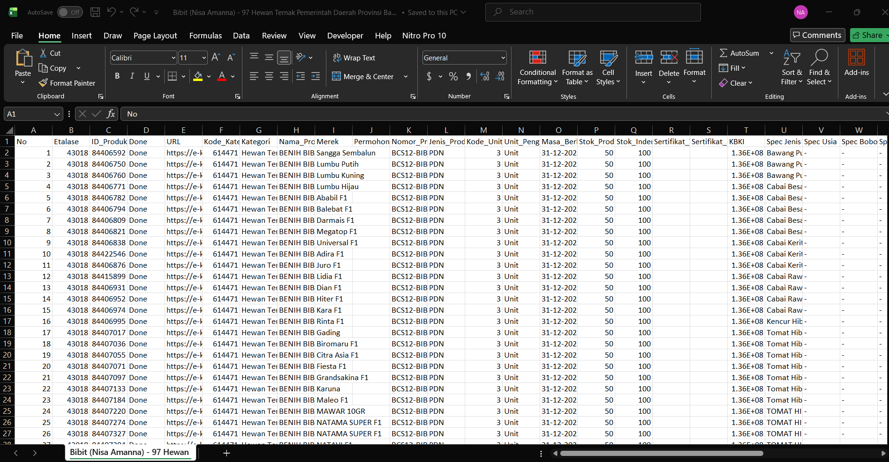
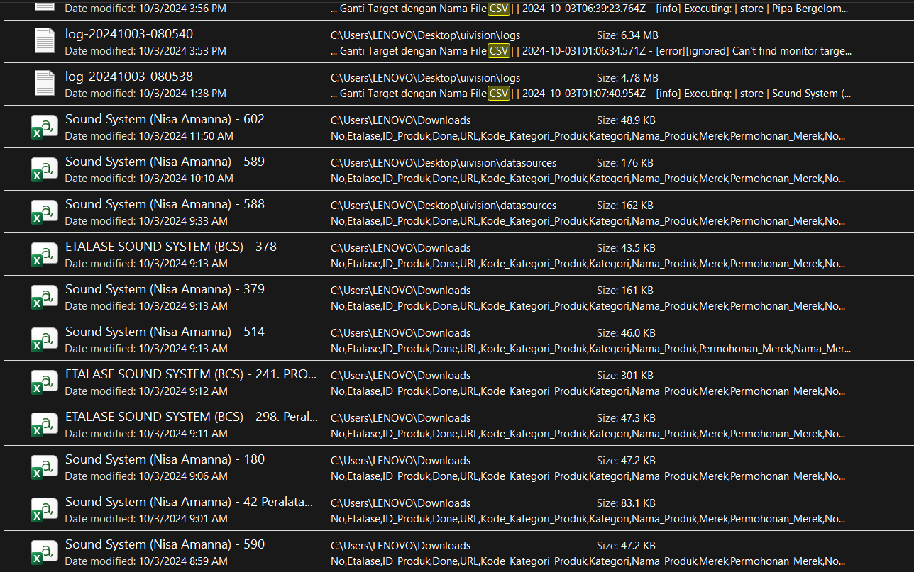
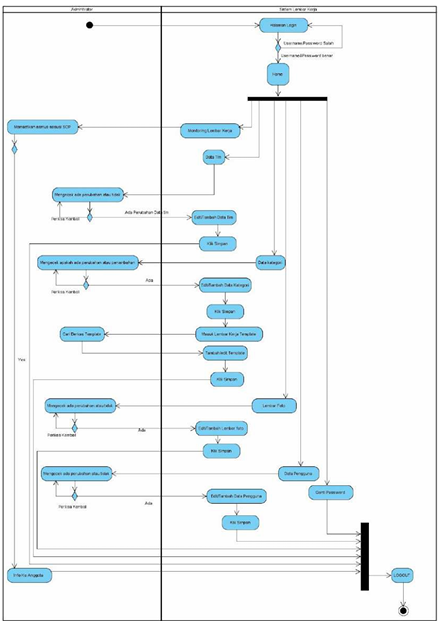
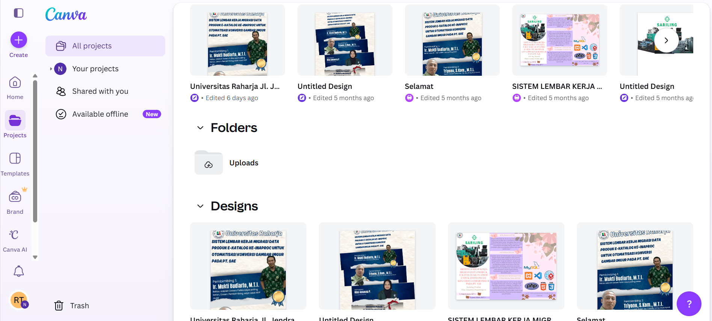
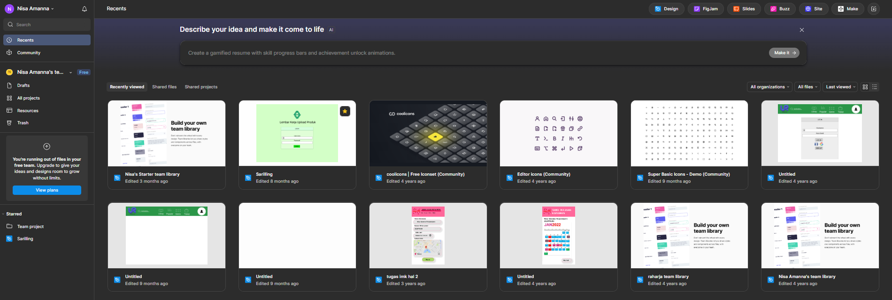
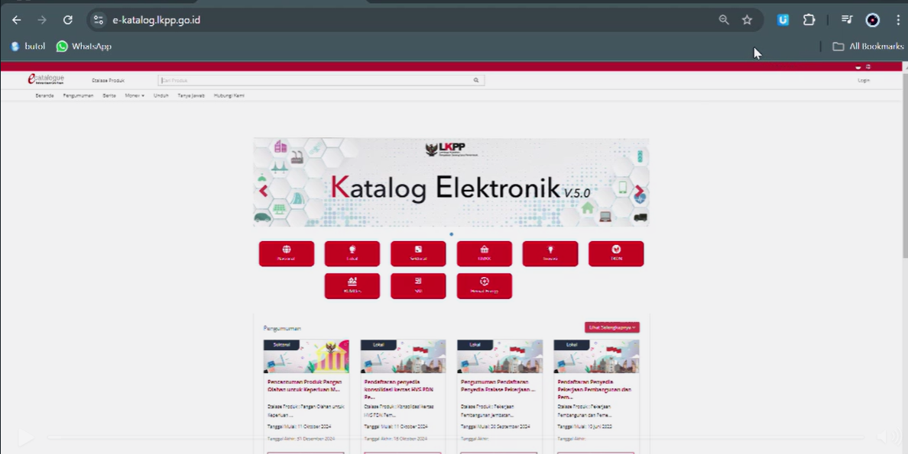
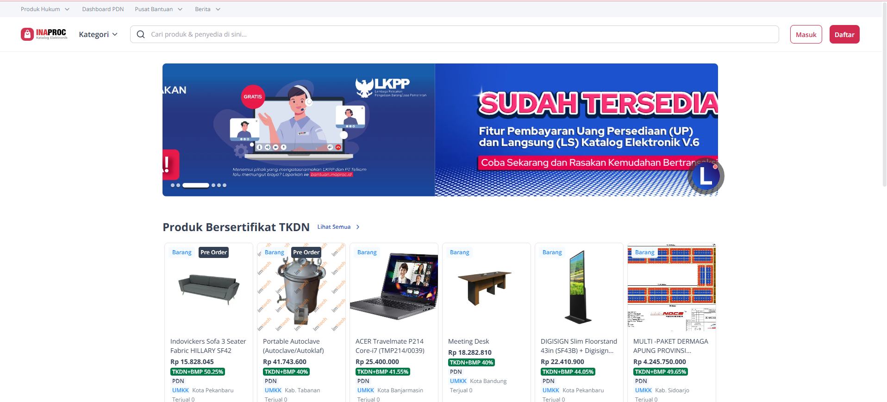

Soft Skills
The core values and mindsets that help me work effectively within a professional team.
Analysis
Analytical Thinking
A logic-driven mindset focused on finding efficient solutions and understanding the 'why' behind a system.
Analysis
Collaborative & Adaptive
Proven ability to work without conflict, adapting quickly to team needs and changing project directions.
Analysis
Technical Communication
Translating complex technical processes into clear, professional documentation and reports.
Analysis
Authentic Learner
A growth mindset with a focus on honesty, integrity, and continuous self-improvement.
Sales
Sales & Persuasive Communication
Experienced in direct sales and product promotion, developing strong communication skills to engage customers and achieve sales targets.
Tools & Software
A collection of professional tools I use to ensure efficiency and high-quality results.
Development Tools
Visual Studio Code
Main editor for writing and debugging HTML, CSS, and JavaScript projects.

Automation & Data
Ui.Vision RPA
Automating bulk data mining and product uploads to web platforms.

Accounting, Automation & Data
Microsoft Excel (Advanced)
Advanced data manipulation, financial reporting, and cleaning raw datasets.
Development Tools
Chrome DevTools
Debugging web elements, inspecting network activity, and testing responsiveness.
Automation & Data
CSV Integration.
Managing data exchange formats for automation scripts and database imports.
Design & UI
Visual Paradigm (UML)
Creating professional ERD and Flowcharts to visualize system architecture.
Design & UI
Canva
Designing visual assets, promotional banners, and social media content.
Design & UI
Figma
Creating UI/UX prototypes and high-fidelity designs for web applications.
Design & UI
Basic UI/UX Logic
Implementing user-centered design principles for better website navigation.
Enterprise Systems
E-Katalog
Professional experience in government e-procurement and product listing management.
Enterprise Systems
Inaproc
Professional experience in government e-procurement and product listing management.
Documentation
Microsoft Office Suite (Word, PPT)
Creating formal reports, business presentations, and administrative documents.
Documentation
Google Workspace.
Real-time team collaboration using Drive, Docs, Sheets, and Slides.